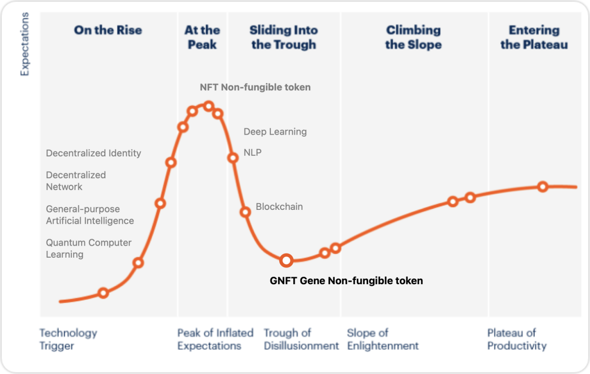

CATALOGUE System
Certification: This involves a blockchain-based system combined with interdisciplinary science to provide identity authentication and authenticity verification for artworks.
Art Gene Card: This is the data credential and visual representation result of the CATALOGUE System, presenting a unique identification RWA asset gene card (archive). It assists collectors in quickly understanding or sharing the “past and present” and “DNA information” of an artwork and its derivatives.
Due to its association with physical world entities, the entire forging process presents higher demands in three dimensions:
- Complexity of the Process: Generating an RWA art collection genetic report involves multiple stages, including macro data collection, coordinate system establishment, micro data collection, component analysis, color analysis, historical evidence retrieval, and data analysis. Each step is interconnected and indispensable.
- Data Security and Trust: Interactions between on-chain and off-chain data are vulnerable areas. Ensuring the credibility of source data and safeguarding data security during on-chain interactions are key focuses of the CATALOGUE System. We employ IoT (Internet of Things) for automated machine processes, facilitating data collection, processing, and on-chain transactions to enhance trust and ensure data synchronization between on-chain and off-chain records. Additionally, a multi-stage verification process is integrated into the genetic data generation, with timestamp mechanisms to mitigate security risks due to data errors or human factors.
- Perpetual Transmission: By completing transactions on the platform through the CATALOGUE System, every subsequent transaction is recorded on-chain, enabling creators to trace and understand every step of a collection’s journey. BeArt adheres to transparent trading methods, ensuring perpetual circulation of collections.
- Privacy Protection: NFT holders can perform all operations with a single wallet. Although the Ethereum network is not anonymous, the NFT information contained in a wallet address remains publicly visible. High-value NFT collections become targets for hackers. Privacy protection remains a continuous concern for RWA collections due to their high value and susceptibility to market attention.
The CATALOGUE System is an innovative system that integrates hardware, software, and blockchain solutions. Hardware includes optical instruments, high-precision cameras, scanners, deep-focus electron microscopes, standard color charts, and radioactive scanners. Software encompasses the CATALOGUE genetic data collection system and BeArt Website front-end and back-end systems. For blockchain, we prioritize the widely adopted Ethereum network and progressively support multi-chain and cross-chain mechanisms. Additionally, the BEART mainnet will be launched to provide users with convenient, efficient collection interactions without requiring explicit perception. From a technological maturity perspective, art RWA goes beyond NFTs, representing more than virtual collections by integrating multiple innovative technologies to achieve gene-level mapping relationships with the physical world.
